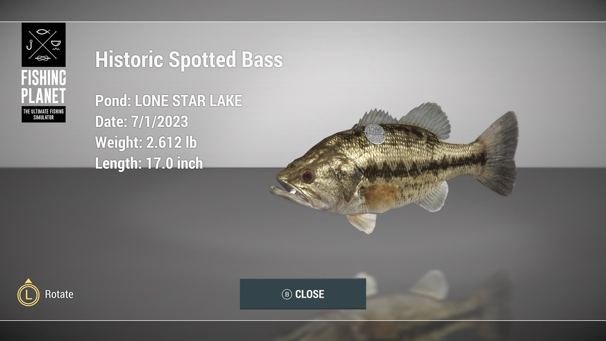
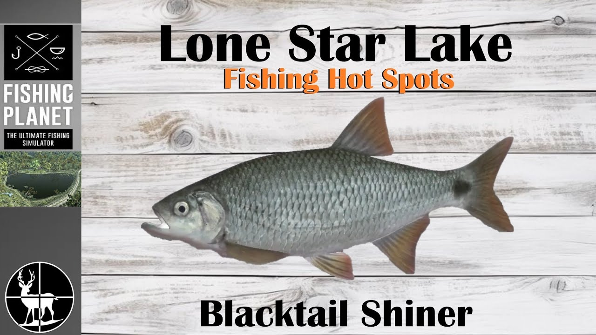

Bass (Spotted)
Buffalo (Smallmouth)
Catfish (Channel)
Crappie (White)
Pickerel (Grass)
Shiners (Golden)
Sunfish / Bluegill

Spotted Bass
Een agressieve rover die zich graag ophoudt bij structuren zoals de brug en leliebladen. Ze staan bekend om hun sprongen boven water tijdens het gevecht. Houd je lijn strak!
🎣 Setup (Spinning)
Hengel ValueSpin 190
Molen Callisto MG 2000
Lijn Fluoro 0.23mm
Leader Geen (Optioneel)
Lure Casting Spoon 9g #1/0
Kleur Goud of Zilver
📍 Locatie
Loop over de houten brug naar de overkant. Ga links in de hoek staan. Werp richting de leliebladen.
Coördinaten: [ -12.00, 45.00 ]
Coördinaten: [ -12.00, 45.00 ]
⚖️ Methode & Tijd
Diepte Midden / Top
Actie Twitch / Stop&Go
Snelheid 1 of 2
Piektijd Ochtend & Namiddag
💡 Pro Tips
Als ze springen, houd je rechtermuisknop ingedrukt om spanning op de lijn te houden, anders schieten ze los. Goede XP bron voor beginners!

Smallmouth Buffalo
Een sterke bodemvis die de bodem afzoekt naar voedsel. Lijkt op een karper. Vereist geduld en een statische aanpak.
🎣 Setup (Feeder/Bottom)
Hengel CreekPro 240
Molen CrucianHunter 3000
Lijn Mono 0.25mm+
Haak #6 tot #2
Aas Doughballs / Semolina
📍 Locatie
Vanaf de startsteiger recht vooruit werpen naar het midden van het meer.
Coördinaten: [ 0.00, 50.00 ]
Coördinaten: [ 0.00, 50.00 ]
⚖️ Methode & Tijd
Diepte Bodem (Max)
Methode Rod Stand (Statisch)
Piektijd Zonnige Dagen
💡 Pro Tips
Gebruik lokvoer (Groundbait) om ze sneller te lokken. Sla niet direct aan bij het eerste belletje, wacht tot de hengeltop krom trekt.

Grass Pickerel
Het kleine neefje van de snoek. Zeer agressief, schuilt in het riet en heeft scherpe tanden.
🎣 Setup (Spinning)
Hengel ValueSpin 190
Molen Callisto MG 2000
Lijn Braid 0.15mm
Leader Titanium (Verplicht!)
Lure Nano Spoon 6g
📍 Locatie
Linkerkant van het meer (Swampy Area). Gooi strak tegen het riet aan.
Coördinaten: [ -45.00, 20.00 ]
Coördinaten: [ -45.00, 20.00 ]
⚖️ Methode & Tijd
Actie Stop&Go / Slow
Snelheid 1
Piektijd Hele dag
💡 Pro Tips
Vergeet je Titanium Leader niet, anders bijten ze je lijn door. Ze vallen vaak vlak voor de kant aan, dus draai helemaal uit.

White Crappie
Een schoolvis die zich graag ophoudt tussen takken en bomen in het water.
🎣 Setup (Match/Dobber)
Hengel TeleFloat 450
Lijn Mono 0.18mm
Dobber Chubby (Slank)
Haak #8 tot #6
Aas Marshmallows / Maden
📍 Locatie
Rechterkant van het meer bij de omgevallen boom (The Snag).
Coördinaten: [ 55.00, 10.00 ]
Coördinaten: [ 55.00, 10.00 ]
⚖️ Methode & Tijd
Diepte 50cm - 90cm
Type Schoolvis

Channel Catfish
De sterkste vis van het meer. Jaagt op geur in de diepe gaten.
🎣 Setup (Zwaar)
Hengel OmniFloat 450
Lijn Braid 0.20mm+
Haak #4 tot #1
Aas Pet Food / Kaas
📍 Locatie
Het diepste gat in het meer (donkerblauw op de kaart), richting de dam.
Coördinaten: [ 10.00, 60.00 ]
Coördinaten: [ 10.00, 60.00 ]
⚖️ Methode & Tijd
Diepte Bodem (Max)
Piektijd Avond & Nacht

Bluegill & Sunfish
Kleine, kleurrijke, brutale visjes. Bijten op alles. Goed voor snel geld.
🎣 Setup (Licht)
Hengel TeleFloat 450
Lijn Mono 0.12mm
Haak #10 tot #8
Aas Brood / Deeg
📍 Locatie
Overal langs de kant, 5 tot 10 meter uit de oever.
Coördinaten: Overal
Coördinaten: Overal
⚖️ Methode & Tijd
Diepte 30cm - 60cm
Actie Dobber gaat snel onder

Golden Shiners
Zeer kleine aasvisjes. Worden gevangen om als levend aas te gebruiken voor Bass en Snoek.
🎣 Setup (Micro)
Hengel TeleFloat 450
Lijn Mono 0.12mm
Haak #12 (Micro)
Aas Deeg / Brood
📍 Locatie
Zeer ondiep bij planten.
Coördinaten: [ -10.00, 15.00 ]
Coördinaten: [ -10.00, 15.00 ]
⚖️ Methode & Tijd
Diepte 20cm - 40cm
Tip Gebruik kleinste haak!